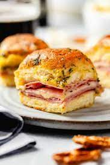

Ham and Cheese Sliders

Ham and Cheese Sliders
My mom loves doing these for sunday dinner, they're delicious,
quick, cheap and everyone is always full and happy. Alternatives to this
recipe would be simple and still taste just as yummy without the indulgence.
Ingredients
- 1 pck Hawaiian (bread) Rolls
- 1 lb Hickory ham
- 1 pck baby swiss cheese
optional
- Butter
- Garlic Salt
- Basil
Directions
- Pre heat oven to 375℉
- Remove entire contents of Hawaiian (bread) rolls and seperate
the bottom from the top layer.
-
Add bottom layer to baking dish, layer on Ham, Cheese, Ham, Cheese.
-
Bake in the oven uncovered for about 10 minutes, or until cheese is melted.
-
Remove from oven, add top layer of rolls, and butter sauce. Bake again for another 5 minutes